<!DOCTYPE html>
<html = style="height: 100%;">
  <head>
    <title>The Shattered Veil</title>
    <meta name="viewport" content="width=device-width, initial-scale=1.0">
    <link rel="stylesheet" href="scripts/leaflet.css">
    <script src="scripts/leaflet.js"></script>
  </head>
  <style>
    /* css to customize Leaflet default styles  */
    .popupCustom .leaflet-popup-tip,
    .popupCustom .leaflet-popup-content-wrapper {
        background: #000000;
        color: #ffffff;
    }
    </style>

  <body style="height: 100%;margin: 0; background-image: 'map/space_bg.jpg'; background-size: cover;">
    <div id="map" style="width: 100%; height: 100%;">  
    
    </div>
    <script type="text/javascript">
    var map = L.map('map', {
    crs: L.CRS.Simple,    
    zoomControl: false,
    scrollWheelZoom: false
});
map.doubleClickZoom.disable();
//customOptions
var customPopupRepentance="<font size='5'><b>Repentance</font><br/></b> Military Base, Fortress World, Military, Politics, Religion, Industrial<br/><br/>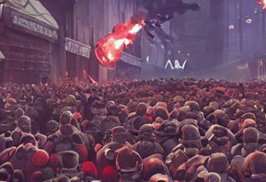<br/><br/>Kyrene’s largest moon has been converted into a penal colony harboring traitors, sinners, and the unruly form across the sector. The planet is a locked down fortress, in part because it houses some key defense systems for Kyrene, and hosts mining operations for Kyrene’s orbital shipyards.";
var customPopupKyrene="<font size='5'><b>Kyrene</font><br/></b> Hive World, Civilian World, Community, Industry, Politics, Core<br/><br/>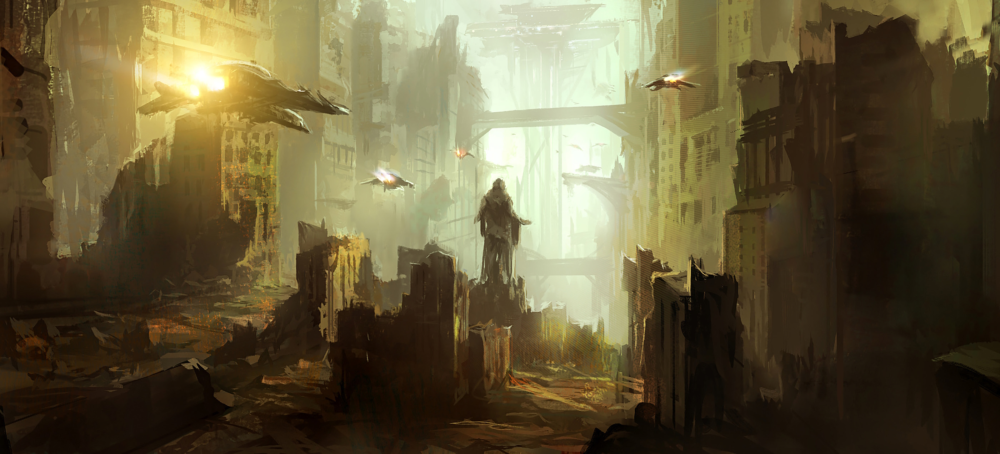<br/><br/>The jewel of the Tychon System, Kyrene is a thriving world that plays home to 2 trillion people. Its vast spires are there for a reason – the planet yet claims valuable untapped mining deposits and a thriving starport and orbital dockyard that is ideal for launching fleets. Both the starport and the population are valuable assets for any who would try to claim them.";
var customPopupVarghast="<font size='5'><b>Varghast</font><br/></b> Military Base, Rural, Fortress, Military, Politics, Resources<br/><br/>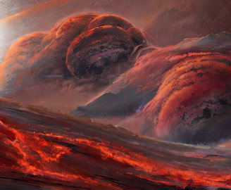<br/><br/>With its red surface swept clean with scouring winds and radiation bursts from the system star, the people of Varghast live in great canyons that delve miles below the surface. Only the Sons of Ash dare travel out on to the surface for training and patrol and never for long. Their fortress monastery is located in the largest canyon at the northern pole, a masterwork of defense lines, anti-orbital weapons and interlocking void shields.";
var customPopupClarion_Call="<font size='5'><b>Clarion Call</font><br/></b> Shrine World, Politics, Religion, Community, Rural<br/><br/>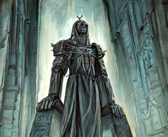<br/><br/>This Imperial Shrine World is the final resting place of St. Benedictine, a powerful living saint renowned for her martyrdom in the system’s wars against the orks. The planet is covered in shrines and places of holy worship. It’s a planet which has little to offer in terms of resources, but plenty of secrets buried far beneath its surface.";
var customPopupAstarix_377="<font size='5'><b>Astarix 377</font><br/></b> Forge World, Research World, Industry, Military, Religion<br/><br/>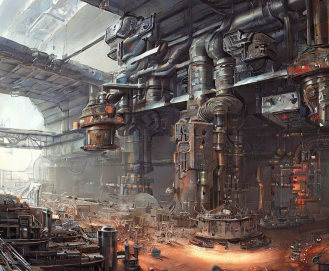<br/><br/>The forges of Astarix produce weapons and armor for Imperial worlds throughout the sector, and the planet employs mighty defenses and multiple knight households in its defense.";
var customPopupAttos="<font size='5'><b>Attos</font><br/></b> Mining World, Community, Industry, Resources<br/><br/>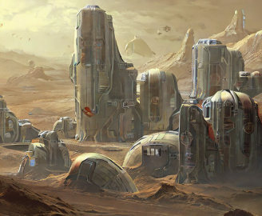<br/><br/>This mining world plays host to hive Attos and boasts more than half a billion Imperial citizens. The planet's core operations are mostly based around mining Prometheum to ship to Astarix for refinement.";
var customPopupOrlem="<font size='5'><b>Orlem</font><br/></b> Military Base, Rural, Community, Military, Resources, Politics<br/><br/><br/><br/>Orlerm is home to a group of knight households who lend their services to nearby Imperial worlds. They have a tradition of allowing the control of the world to fall to whichever knight wins a grand tournament known as “The Great Joust”. As the event approaches, it’s been found that the ancient doctrine has a no challengers refused clause, allowing for outside invaders to try their hand at the event... should they be able to secure one of the formal invitations.";
var customPopupCerus_Gamma="<font size='5'><b>Cerus Gamma</font><br/></b> Fleet Installation, Fortress World, Military, Industry, Politics, Resources<br/><br/>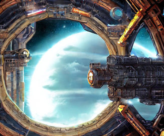<br/><br/>The voidborne dockyard of Cerus Gamma is a massive space station dedicated to the construction and repair of Imperial ships. The facility itself is built on a series of asteroids and large enough to house several city-size facilities dedicated to the capture and mining of nearby asteroids for resources.";
var customPopupLenk="<font size='5'><b>Lenk</font><br/></b> Frontier World, Mining World, Industry, Military, Resources, Rural, Tomb World, Core<br/><br/>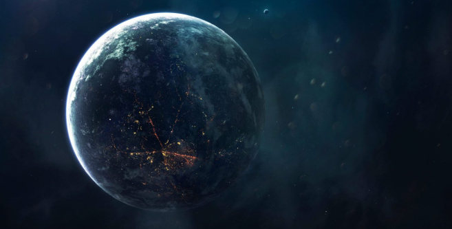<br/><br/>After the planet fell to Chaos following a series of bloody battles, Lenk has become a Chaos stronghold, a stronghold for heretic warbands dominated by the dread warlords of House Gloam and House Vykir, though much of the planet is home to Ork warbands, Aeldari raiders, and emergent Necron tomb world structures.";
var customPopupPaulus="<font size='5'><b>Paulus</font><br/></b> Frontier World, Mining World, Resources, Industry, Religion, Rural<br/><br/>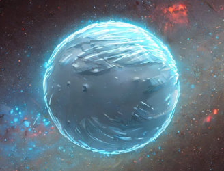<br/><br/>The frontier world of Paulus is an icy planet just outside the Goldilocks zone of its star. The planet has several major cities but neither the agriculture nor the mining operations to sustain a full hive ecosystem. The planet came under siege shortly before the opening of the Great Rift, and in the process was overrun by chaos daemons and has subsequently been conquered by Chaos forces, who have established a number of cults across the planet’s surface.";
var customPopupSiasa="<font size='5'><b>Siasa</font><br/></b> Hive World, Trader's Hub, Politics, Industry, Military<br/><br/>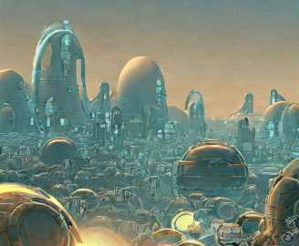<br/><br/>Although long held by Imperial governors, Siasa’s fortunes shifted after the emergence of the Great Rift and it now finds itself on the verge of hosting its first democratic elections in over three millennia. Behind the scenes, various forces politick and jockey for position, hoping to shift the election in their favor and realign the planet’s resources to their needs.";
var customPopupKolthor="<font size='5'><b>Kolthor</font><br/></b> Forge World, Research World, Industry, Military, Religion, Industrial<br/><br/>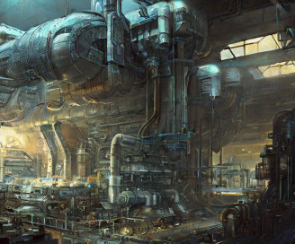<br/><br/>A Mechanicus held Forge World existing far outside the Imperium’s light due to rare materials found on the planet. It’s said that this planet is home to much Mechanicus experimentation and the materials gathered here played a key role in many of Cawl’s innovations in recent years. Since the rift, a sizeable cult of Vashtorr worship has been growing on the planet.";
var customPopupKeplon="<font size='5'><b>Keplon</font><br/></b> Research World, Frontier World, Community, Military, Resources, Politics, Fringe, Rural, Tomb World<br/><br/>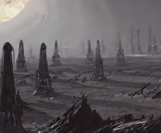<br/><br/>Keplon hosts a series of blackstone obelisks that suggest there was once a thriving Necron presence on the planet - and hint at the tomb complex beneath its surface. The planet’s blackstone deposits and unique magnetic and warp phenomena have made it a valuable research hub for scientists throughout the galaxy, and its secrets are highly sought after by the Mechanicus, Votann, and T’au.";
var customPopupDrazris="<font size='5'><b>Drazris</font><br/></b> Civilian World, Hive, Community, Industry, Politics<br/><br/>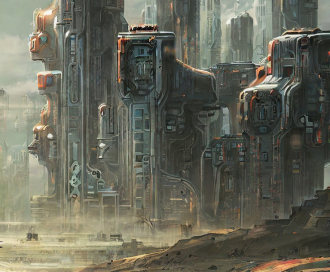<br/><br/>Drazris was once a thriving Imperial center but recently control has been seized by The Cult of Shadow’s Edge, a genestealer cult that achieved their day of ascension perhaps too early. When their prophesied saviors never arrived, some of the cult fell to despair and into the arms of what was at the time a small chaos cult on the planet. There are some Imperial forces still fighting for control of the world but for now the cult waits for the shadow of the void to envelop them.";
var customPopupEtara="<font size='5'><b>Etara</font><br/></b> Agri-World, Rural World, Community, Resources, Industry, Fringe<br/><br/>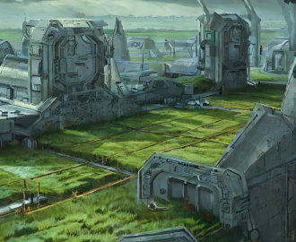<br/><br/>The massive agri-world of Etara supplies food for the imperial worlds of the Procyon and Tychon systems.";
var customPopupFyrkat="<font size='5'><b>Fyrkat</font><br/></b> Mining World, Community, Industry, Resources<br/><br/>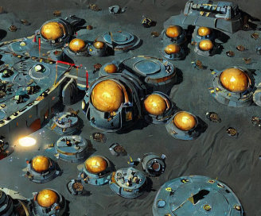<br/><br/>A massive mining outpost held by the Greater Thurian League, Fyrkat is home to millions of Kyn and COG ready to take up arms for the defense of their home at any time. The Leagues wage constant battles there with the Orks that also call the planet home, and frequently trade with the Tau, Imperium, and Aeldari who visit the planet.";
var customPopupAstradus="<font size='5'><b>Astradus</font><br/></b> Frontier World, Military Base, Community, Military, Resources, Rural, Core<br/><br/>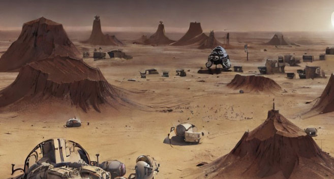<br/><br/>The planet Astradus was a recent re-entrant into the galactic map, emerging from warp storms after the opening of the great rift. In the wake of its reemergence it was immediately beset by Ork and Chaos forces and ultimately Ork warbands came to dominate the planet, turning it into one big junkyard Speedwaaagh.";
var customPopupScintrost="<font size='5'><b>Scintrost</font><br/></b> Agri-World, Rural, Community, Industry, Resources<br/><br/>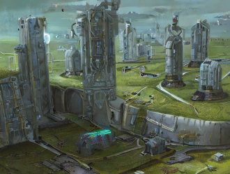<br/><br/>Scintrost provides agricultural support for the fringe imperial worlds of the Xenfar system. While mostly an unassuming rural planet, long buried secrets hide below the surface. Underground esoteric societies meet in secret to worship the four armed emperor, and deeper still ancient alien machineries thrum idly waiting for someone to activate them.";
var customPopupNal_Shara="<font size='5'><b>Nal'Shara</font><br/></b> Maiden World, Agri-World, Resources, Rural<br/><br/><br/><br/>This world has remained hidden from Imperial scans, secreted away by Aeldari technology for millennia, though those ancient wards have failed in the wake of the Cicatrix Maledictum, exposing Nal’Shara for the first time. This planet of pristine beauty and lush jungles has been cultivated and kept free of ruinous hands, but now multiple forces seek to lay claim on her bounty.";
var customPopupSkaadthi="<font size='5'><b>Skaadthi</font><br/></b> Research World, Frontier World, Resources, Military, Industrial<br/><br/><br/><br/>This frozen world on the edge of the Xenfar system is covered in thick layers of ice, below which lie vast oceans heated by thermal vents.";
var customPopupCyrillon="<font size='5'><b>Cyrillon</font><br/></b> Mining World, Resources, Politics, Industrial<br/><br/>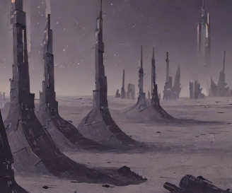<br/><br/>This hostile, desert world is home to several small mining colonies, roving Ork warbands, and wasteland nomads who patrol its surface.";
var customPopupBrumion="<font size='5'><b>Brumion</font><br/></b> Fortress World, Military Base, Military, Community, Politics, Religion, Rural<br/><br/>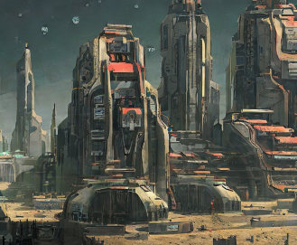<br/><br/>The exodite world Brumionis home to a large number of Aeldari settlements, each armed and prepared to defend their planet. The planet is also home to a number of ancient Aeldari ruins and webway gates, and acts as a point of entry for Aeldari raiders, corsairs, and craftworlders.";
var customPopupWura_Osh="<font size='5'><b>Wura'Osh</font><br/></b> Political Centre, Community, Industry, Politics, Hive World<br/><br/>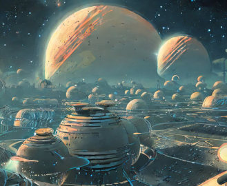<br/><br/>Wura’Osh is the Tau Empire’s biggest presence in the sector, acting as both a trading hub and bastion for diplomacy. Both Votann and Aeldari have a significant presence on the world, with settlements acting as homes to merchants and ambassadors, as well as some genestealer cult presence in the slums of the world.";
var customPopupLothept="<font size='5'><b>Lothept</font><br/></b> Mining World, Resources, Politics, Industrial<br/><br/>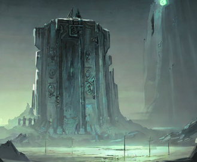<br/><br/>An active Necron world used as a forward operating base for vassals of the Silent King. With this world’s dynasty fully awakened, the planet is bustling with activity. There are reports of Adeptus Mechanicus research teams infiltrating the world with hopes to plunder xeno tech";
var customXenfar="<font size='5'><b>Xenfar System</font><br/></b>The furthest of the systems from Imperial light, the pulses of the Astronomicon barely reached Xenfar in the days before the rift. Many of its planets are lawless or governed by Xenos races, and its trade outposts harbor rogue traders, renegades, and profiteers of all stripes.";
var customProcyon="<font size='5'><b>Procyon System</font><br/></b>Once the seat of a mighty Necron dynasty, Procyon now plays host to a series of frontier worlds. Imperial control over the system has slipped away over the past few decades as multiple Chaos campaigns have made significant headway in establishing a foothold in the system, and the traitorous turn of two of its knight households have helped doom the system to strife.";
var customTychon="<font size='5'><b>Tychon System</font><br/></b>If there’s a system that still qualifies as Imperium held in Vadinax, Tychon is it. The center of the system is dominated by several Imperium-held worlds which have managed to hold strong against the darkness of the Great Rift as other systems in the sector have slipped away.";


// specify popup options 
var customOptions =
        {
        'maxWidth': '400',
        'width': '200',
        'className' : 'popupCustom'
        }


  //Creating the Map
var bounds = [[0,0], [1200,1400]];
var image = L.imageOverlay('map/space_map2.png', bounds).addTo(map);
map.fitBounds(bounds);  

//Coordinate Finder
var marker = L.marker([0, 0], {
      draggable: true,
    }).addTo(map);
    marker.bindPopup('LatLng Marker').openPopup();
    marker.on('dragend', function(e) {
      marker.getPopup().setContent(marker.getLatLng().toString()).openOn(map);
    });

//icons
var damageIcon = L.icon({
		iconUrl:       'icons/damage.png',
		iconRetinaUrl: 'icons/damage.png',
		iconAnchor:  [12, 41],
		popupAnchor: [1, -34],
		tooltipAnchor: [16, -28]
	});
var foxholesIcon = L.icon({
		iconUrl:       'icons/upgrades/foxholes.png',
		iconRetinaUrl: 'icons/upgrades/foxholes.png',
		iconAnchor:  [12, 41],
		popupAnchor: [1, -34],
		tooltipAnchor: [16, -28]
	});
var krak_minesIcon = L.icon({
		iconUrl:       'icons/upgrades/krak_mines.png',
		iconRetinaUrl: 'icons/upgrades/krak_mines.png',
		iconAnchor:  [12, 41],
		popupAnchor: [1, -34],
		tooltipAnchor: [16, -28]
	});
var tactical_radarIcon = L.icon({
		iconUrl:       'icons/upgrades/tactical_radar.png',
		iconRetinaUrl: 'icons/upgrades/tactical_radar.png',
		iconAnchor:  [12, 41],
		popupAnchor: [1, -34],
		tooltipAnchor: [16, -28]
	});
var targeting_jammersIcon = L.icon({
		iconUrl:       'icons/upgrades/targeting_jammers.png',
		iconRetinaUrl: 'icons/upgrades/targeting_jammers.png',
		iconAnchor:  [12, 41],
		popupAnchor: [1, -34],
		tooltipAnchor: [16, -28]
	});
var csmIcon = L.icon({
		iconUrl:       'icons/torso/csm.png',
		iconRetinaUrl: 'icons/torso/csm.png',
		iconAnchor:  [12, 41],
		popupAnchor: [1, -34],
		tooltipAnchor: [16, -28]
	});
var csm2Icon = L.icon({
		iconUrl:       'icons/torso/csm2.png',
		iconRetinaUrl: 'icons/torso/csm2.png',
		iconAnchor:  [12, 41],
		popupAnchor: [1, -34],
		tooltipAnchor: [16, -28]
	});
var dark_angelsIcon = L.icon({
		iconUrl:       'icons/torso/dark_angels.png',
		iconRetinaUrl: 'icons/torso/dark_angels.png',
		iconAnchor:  [12, 41],
		popupAnchor: [1, -34],
		tooltipAnchor: [16, -28]
	});
var death_guardsIcon = L.icon({
		iconUrl:       'icons/torso/death_guards.png',
		iconRetinaUrl: 'icons/torso/death_guards.png',
		iconAnchor:  [12, 41],
		popupAnchor: [1, -34],
		tooltipAnchor: [16, -28]
	});
var imperial_guardsIcon = L.icon({
		iconUrl:       'icons/torso/imperial_guards.png',
		iconRetinaUrl: 'icons/torso/imperial_guards.png',
		iconAnchor:  [12, 41],
		popupAnchor: [1, -34],
		tooltipAnchor: [16, -28]
	});
var necronsIcon = L.icon({
		iconUrl:       'icons/torso/necrons.png',
		iconRetinaUrl: 'icons/torso/necrons.png',
		iconAnchor:  [12, 41],
		popupAnchor: [1, -34],
		tooltipAnchor: [16, -28]
	});
var orksIcon = L.icon({
		iconUrl:       'icons/torso/orks.png',
		iconRetinaUrl: 'icons/torso/orks.png',
		iconAnchor:  [12, 41],
		popupAnchor: [1, -34],
		tooltipAnchor: [16, -28]
	});
var space_wolvesIcon = L.icon({
		iconUrl:       'icons/torso/space_wolves.png',
		iconRetinaUrl: 'icons/torso/space_wolves.png',
		iconAnchor:  [12, 41],
		popupAnchor: [1, -34],
		tooltipAnchor: [16, -28]
	});
var tyranidsIcon = L.icon({
		iconUrl:       'icons/torso/tyranids.png',
		iconRetinaUrl: 'icons/torso/tyranids.png',
		iconAnchor:  [12, 41],
		popupAnchor: [1, -34],
		tooltipAnchor: [16, -28]
	});
var tyranids2Icon = L.icon({
		iconUrl:       'icons/torso/tyranids2.png',
		iconRetinaUrl: 'icons/torso/tyranids2.png',
		iconAnchor:  [12, 41],
		popupAnchor: [1, -34],
		tooltipAnchor: [16, -28]
	});
var world_eatersIcon = L.icon({
		iconUrl:       'icons/torso/world_eaters.png',
		iconRetinaUrl: 'icons/torso/world_eaters.png',
		iconAnchor:  [12, 41],
		popupAnchor: [1, -34],
		tooltipAnchor: [16, -28]
	});    

//Planet Markers
var planet_Repentance = L.marker([671, 805],{opacity: 0}).bindPopup(customPopupRepentance,customOptions).addTo(map);
var planet_Kyrene = L.marker([689, 575.5],{opacity: 0}).bindPopup(customPopupKyrene,customOptions).addTo(map);
var planet_Varghast = L.marker([688.5, 347.5],{opacity: 0}).bindPopup(customPopupVarghast,customOptions).addTo(map);
var planet_Clarion_Call = L.marker([886, 917],{opacity: 0}).bindPopup(customPopupClarion_Call,customOptions).addTo(map);
var planet_Astarix_377 = L.marker([886.5, 688.5],{opacity: 0}).bindPopup(customPopupAstarix_377,customOptions).addTo(map);
var planet_Attos = L.marker([888.5, 460.5],{opacity: 0}).bindPopup(customPopupAttos,customOptions).addTo(map);
var planet_Orlem = L.marker([1084, 803],{opacity: 0}).bindPopup(customPopupOrlem,customOptions).addTo(map);
var planet_Cerus_Gamma = L.marker([1084, 575.5],{opacity: 0}).bindPopup(customPopupCerus_Gamma,customOptions).addTo(map);
var planet_Lenk = L.marker([482, 915],{opacity: 0}).bindPopup(customPopupLenk,customOptions).addTo(map);
var planet_Paulus = L.marker([684, 1031],{opacity: 0}).bindPopup(customPopupPaulus,customOptions).addTo(map);
var planet_Siasa = L.marker([286, 802],{opacity: 0}).bindPopup(customPopupSiasa,customOptions).addTo(map);
var planet_Kolthor = L.marker([87, 911],{opacity: 0}).bindPopup(customPopupKolthor,customOptions).addTo(map);
var planet_Keplon = L.marker([288, 1029],{opacity: 0}).bindPopup(customPopupKeplon,customOptions).addTo(map);
var planet_Drazris = L.marker([484, 1145],{opacity: 0}).bindPopup(customPopupDrazris,customOptions).addTo(map);
var planet_Etara = L.marker([88, 1139],{opacity: 0}).bindPopup(customPopupEtara,customOptions).addTo(map);
var planet_Fyrkat = L.marker([283, 1257],{opacity: 0}).bindPopup(customPopupFyrkat,customOptions).addTo(map);
var planet_Astradus = L.marker([291, 573],{opacity: 0}).bindPopup(customPopupAstradus,customOptions).addTo(map);
var planet_Scintrost = L.marker([99, 689],{opacity: 0}).bindPopup(customPopupScintrost,customOptions).addTo(map);
var planet_Nal_Shara = L.marker([484, 458],{opacity: 0}).bindPopup(customPopupNal_Shara,customOptions).addTo(map);
var planet_Skaadthi = L.marker([286, 349],{opacity: 0}).bindPopup(customPopupSkaadthi,customOptions).addTo(map);
var planet_Cyrillon = L.marker([488, 238],{opacity: 0}).bindPopup(customPopupCyrillon,customOptions).addTo(map);
var planet_Brumion = L.marker([93, 462],{opacity: 0}).bindPopup(customPopupBrumion,customOptions).addTo(map);
var planet_Wura_Osh = L.marker([289, 122],{opacity: 0}).bindPopup(customPopupWura_Osh,customOptions).addTo(map);
var planet_Lothept = L.marker([94, 233],{opacity: 0}).bindPopup(customPopupLothept,customOptions).addTo(map);
var xenfar_sector = L.marker([6, 77],{opacity: 0}).bindPopup(customXenfar,customOptions).addTo(map);    
var procyon_sector = L.marker([589, 1297],{opacity: 0}).bindPopup(customProcyon,customOptions).addTo(map);    
var tychon_sector = L.marker([1066, 345],{opacity: 0}).bindPopup(customTychon,customOptions).addTo(map);


//Damage Markers
var damage_marker = L.marker([410, 498],{draggable: true, icon: damageIcon}).addTo(map);

//Fortification markers
var foxholes_marker = L.marker([410, 498],{draggable: true, icon: foxholesIcon}).addTo(map);
var krak_mines_marker = L.marker([410, 498],{draggable: true, icon: krak_minesIcon}).addTo(map);
var tactical_radar_marker = L.marker([410, 498],{draggable: true, icon: tactical_radarIcon}).addTo(map);
var targeting_jammers_marker = L.marker([410, 498],{draggable: true, icon: targeting_jammersIcon}).addTo(map);

//torso markers
var csm_marker = L.marker([410, 498],{draggable: true, icon: csmIcon}).addTo(map)
var csm2_marker = L.marker([410, 498],{draggable: true, icon: csm2Icon}).addTo(map)
var dark_angels_marker = L.marker([410, 498],{draggable: true, icon: dark_angelsIcon}).addTo(map)
var death_guards_marker = L.marker([410, 498],{draggable: true, icon: death_guardsIcon}).addTo(map)
var imperial_guards_marker = L.marker([410, 498],{draggable: true, icon: imperial_guardsIcon}).addTo(map)
var necrons_marker = L.marker([410, 498],{draggable: true, icon: necronsIcon}).addTo(map)
var orks_marker = L.marker([410, 498],{draggable: true, icon: orksIcon}).addTo(map)
var space_wolves_marker = L.marker([410, 498],{draggable: true, icon: space_wolvesIcon}).addTo(map)
var tyranids_marker = L.marker([410, 498],{draggable: true, icon: tyranidsIcon}).addTo(map)
var tyranids2_marker = L.marker([410, 498],{draggable: true, icon: tyranids2Icon}).addTo(map)
var world_eaters_marker = L.marker([410, 498],{draggable: true, icon: world_eatersIcon}).addTo(map)

    </script>
  </body>
</html>
